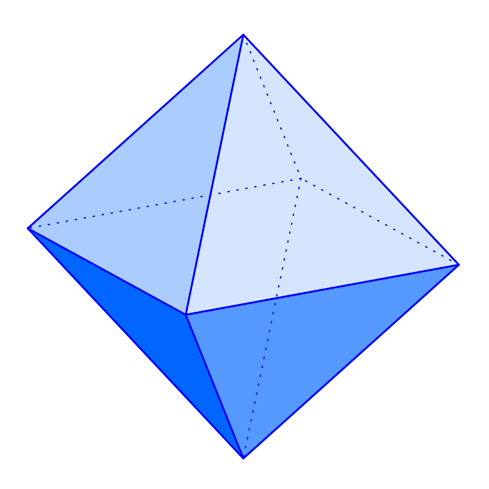

o que é
Um octaedro é um poliedro, ou seja, um sólido geométrico de três dimensões com oito faces. Um octaedro regular, que é um dos sólidos platônicos, tem todas as suas faces como triângulos equiláteros iguais, e em cada vértice se encontram quatro triângulos.
Quem descobriu
A descoberta do octaedro, como um dos cinco sólidos platônicos, é comumente atribuída a Teeteto (417 a.C.-369 a.C.), que aprofundou os estudos sobre estes poliedros regulares. Embora Pitágoras tenha sido familiarizado com alguns destes sólidos, como o tetraedro, o cubo e o dodecaedro, a descoberta do octaedro e do icosaedro é frequentemente associada a Teeteto.
Acredita-se que Platão (350 a.C.) tenha reconhecido a importância dos sólidos platônicos e os tenha relacionado com a construção do Universo, associando o octaedro ao elemento ar. Apesar de Platão não ter sido o descobridor, ele os tornou conhecidos e deu-lhes um significado filosófico.
Aplicações
O octaedro, como um dos sólidos platônicos, tem algumas aplicações na vida cotidiana, embora não tão diretas quanto outros poliedros como o cubo ou a pirâmide. Ele é um conceito importante na geometria espacial e encontra aplicações em diversas áreas.
Aplicações:
Ciências e Tecnologia:
O octaedro é um conceito fundamental na geometria espacial e é utilizado em diversas áreas da ciência e tecnologia, como:
Cristalografia: A estrutura de alguns cristais, como o diamante, pode ser descrita usando a geometria do octaedro.
Química: Em química, o octaedro é usado para descrever a geometria de algumas moléculas e íons.
Matemática: O octaedro é um dos sólidos platônicos e é estudado na geometria espacial.
Arte e Design:
O octaedro pode ser usado como inspiração para projetos artísticos e de design.
Arquitetura: A forma do octaedro pode ser usada para criar estruturas e edifícios com formas inovadoras.
Joalheria: O octaedro pode ser usado como inspiração para o design de joias e outros objetos de arte.
Jogos e Brinquedos:
DADOS: Octaedros são utilizados como dados em jogos de RPG e jogos de mesa.
Brinquedos: Octaedros podem ser encontrados em brinquedos que exploram a geometria tridimensional, como blocos de construção ou jogos de encaixe.
Representação Simbólica:
O octaedro, como um dos sólidos platônicos, tem sido associado a diferentes elementos e conceitos ao longo da história, como o ar, a beleza e a perfeição.
Em resumo: O octaedro é um conceito importante na geometria e na ciência, e pode ser encontrado em diversas aplicações práticas, desde a estrutura de cristais até a inspiração para projetos de arte e design.
Formula
A fórmula para calcular a área da superfície e o volume de um octaedro regular (com todas as faces triângulos equiláteros) é:
Área da superfície: A = 2√3 x a², onde "a" é a medida de uma das arestas.
Volume: V = (√2/3) x a³, onde "a" é a medida de uma das arestas.
Trabalho feito por
Victor Franco Rocha de Oliveira, Emanuelly Sophia Santos Rodrigues, Gabriel Lucas Alves Rezende